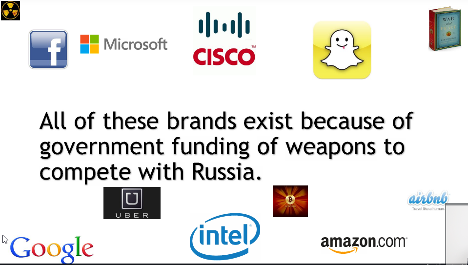

The Most Important Investment Characteristic is:
-->it's not good business model, it's actually management team, the jockey is always more important than the horse
How to know they are good management team?
1-sold companies in the past that they've started
2-or been a part of groups that have sold companies
3-you also want to make sure that their employees like them, like working for them and respect them
-->best question to ask before investing in private or public company and before analyzing the company is, in five years is this company that i might invest in going to be more relevant or less relevant than today??
How to pitch to a VC?
-->Prepare 3 pitches: 30 seconds, 5 minutes, 30 minutes
(30 seconds pitch is the most important one, you want to make it simple to understand so that a 6 year old can understand)
-->Sell yourself: nothing is more important
-->Discuss what is different about your product
-->Be able to discuss competition and market
-->Have basic financials ready for discussion
-->Who are your partners, investors and advisors?
-->Show the product
-->Keep it simple, be passionate, be interesting
-->Less is more
Why technology venture capital?? Why now??
Ans: the price of computing has come down materially
Why good management team?
Ans: because if the markets change for whatever reason a good management team can always adapt
--------------------------------------------------------
-->most successful CEOs stop talking once the sale done
--------------------------------------------------------
-->In order to understand VC, we need to understand the genesis and historical context of the geopolitical events that caused the VCsector to emerge, yes american fear of Russia is the only reason the VC industry exists
-->fear and the cold war led to the creation of the internet

-->GPS was from guided missile research
-->The database exists because of the CIA's project Oracle
-->The microchip was financed by NASA so NASA can put the first person on the moon before Russians
-->palantir[largest employer in Palo Alto] was financed by the CIA's VC division
-->The web was built in case soviet nuclear bombs hit major cities in america, then cities could still communicate with other cities via different traffic routes
-->The peace movement was created to counter the war movement in US, so these 20s students that were in university at berkeley and other schools across the country in the late 60s, there parents had fought in world war 2, their grandparents in world war 1, their brothers were getting killed in the stupid war in vietnam,so the peace movement in the bay area which led to innovation, so they marched at berekely, standford, they held peace events at telegraph tower which is downtown san francisco, these people shared everything shareable open source software, was born at that time which is the notion of kind of sharing information and not trying to only make money off it, standford got rid of all government weapons research on campus, these kids were inspired by drugs and music, so these entrepreneurs were former hippies and they thought differently from their parents, They thought differently and embraced change
-->These big bang unique events haven't occurred anywhere else in the world yet, he think it's because america is a country of extremes
Summary: Competing with Russia is the only reason the VC industry exists
-----------------------------------------------------------
Richest family in america in 60s, was Rockfellers, which have venrock investing company which invested in fairchild semiconductor company, and the reason they did was because russian satellite beat america to space, so america was brokenhearted during the early 60s, so the kennedy administration decided to create NASA
-->VC firms love backing the same executives again
-->Most VC in America is in the Bay Area
-->60% of engineers in the silicon valley are born overseas
-->No limits to what you can achieve in sillicon valley
What VC should you target?
1-Know their stage focus
2-Know their sector focus
3-Know their reputation
4-Know their target return date
ex:
-->Don't approach a hardware based venture capital firm if you're starting a software company or don't approach a restaurant or hotels based venture capital firm if you're starting an industrial
What VC should you target?
1-Are they founder friendly?
2-Are they growth or value?
3-Do you enjoy their company?
4-Do you trust them?
-->Value investors not good at investing in tech companies, growth investors are good
How do vc firms make money?
1-2% management annual fee ( 2% of the total AUM (asset under management))
2-20% incentive fee, 20% of the profit
How does investing in VC work?
1-Capital calls(you call every time to investor to take some of money decided on your business)
2-20% left over to avoid dilution(means if somebody else invests in the company otherness at a higher valuation, we want to invest part of the 20% we have left over so we don't get looted in case we still own the same company)
How do VC firms get deals?
1-Network, Network, Network
2-Past investments
3-other VC introduce firms to VC
4-Universities
-->if somebody offers you the investment in a company public or private, ask yourself why am i so luck??network
-->each deal has one lead investor and other venture capital firms invest with them just to kind of diversity the risks
-->never deal with one bank, you deal with many because you want them to compete for your business to give you the best rates
who do we back??
1-Strong management team(ok if they have failed before)
2-huge tam
3-strong syndicate(high quality investors invest in same kind of business)
4-disruptive business model(which is going to change the world)
-----------------------------------------------------------
Security structures
-->you have lawyer to help you understanding these structures
shares:
1-common shares
2-preferred shares
Down round?
-if investors give you a lot of money in round (a) so your shares too high
-price of new shares (b) is lower
-everyone is angry at the ceo
-anti dilution clause protection
Up round?
-if you price the series "a" low enough (this is smart)
-series "b" is higher valuation
-VC from a round does "Pro-Rata"
-therefore no dilution
ex:
1-Venture Capital called Sequoia is going to invest and lead the series "a"
2-now you the entrepreneur are own 10% of a company which valuation 1m$, so you own 100K shares
3-now kleiner is another venture capital does the series B round at 2m$ valuation of the company and new shares are created because employees and Sequoia aren't selling their shares
4-so now you(entrepreneur) own <10%, you got diluted why? because 500K shares were created for kleiner
5-2m$/1.5m shares = 1.33$/share
6-100k shares * 1.33$ = 133000$
7-133000/2m$ = 6.65%, you get diluted!!!!
8-per the legal docs, "pro-rata", 10% of 2$m = 200$k
9-if i buy 50k more shares then no dilution for me, solution kleiner only gets to buy 450k shares
-->Sequoia owns preferred shares so they had the right to invest a pro-rata amount of 67$k to offset dilution
-->So this is why VC firms only invest 75%-90% of a fund so that it can invest more money so they don't get diluted in the good deals
Convertible debt
-->This is a debt instrument and hence has senior debt claims over preferred shareholders, so the startup that can't pay that debt back, what happens is it can convert into stock(take company stuff like cars, machines) for your investor
-->In between the Series A and Series B rounds, if startups need money before series B, many startups do a 20% discount convert(means that investors loan you money that converts from debt into equity that is priced at a 20% discount in the next round)
Warrants
-->A Startup can incentivize investors when they invest by giving them warrants(A stock
warrant represents the right to purchase a company's stock at a specific price
and at a specific date. A stock
warrant is issued directly by a company to an investor
)
-->warrants are worth less than options as they are new shares
Options
-->Stock
options are purchased when it is believed the price of a stock will go up or down. Stock
options are typically traded between investors.
-->Call option = the right to buy shares at a specific price in the future
----------------------------------------------------------
ex:
1-fresh entrepreneur launched his payment company last year he had 10000$ in equity capital
2-He decided to launch new company then with 2000000 shares
3-He needs to negotiate with sequoia on how many shares they get
4-He and Sequoia agree that in 5 years his company will make 1m$ in net income
5-A competitor of his just went public at a 20$m valuation with 2m$ in net income
price earnings ratio = P/E = 20m/2m = 10x
6-in 5 years, we want to go public at 10m$(half the net income)
7-sequoia expects to make 50% per year, we need to calculate what his company in 5 years is worth today, 10m$/(1+50%)^5 = 1,316,872$
8-The value today is 1,316,872$, sequoia owns 1m$/1.32m$ = 76% so entrepreneur owns 24% and has 2m shares
9-total shares = 2m/.24 = 8.3m shares, so sequoia owns 6.3m shares
10-What is the share price? 1m$/6.3m shares = 15.8cent per share
11-in 5 years pre $ valuation = 24% * $10m =2.4$m (his ownership)

-->as Entrepreneur you should accounted for that, you should have hired a lawyer to do all the legal paperwork early
-->Outside (venture) investors are protected against dilution because they own "preferred shares", we get diluted as we own "common shares", Founders need to understand dilution before dealing with venture capital firms
Why do we issue stock options?
1-Cheaper than paying a salary
2-Motivates all to work as a team
3-Vesting(basically golden handcuffs, you can't benefit from ownership in stock options until you've held them for four years)
-->a lot of most successful entrepreneurs in the world have failed many times before they succeeded
-->jordn: i've failed many times in life and that is why i succeed
-->san francisco and not the valley is the new home of the unicorn
---------------------------------------------------------
-->The most successful people are the most busy people, do it now, do it now
----------------------------------------------------------